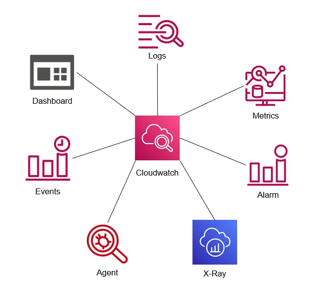

Esta categoria de serviços AWS inclui serviços que fornecem registro, monitoramento e auditoria para suas aplicações em execução na AWS.
O Amazon CloudWatch é um serviço de monitoramento para recursos em nuvem da AWS e as aplicações que você executa na AWS.
O CloudWatch é para monitoramento de desempenho (o CloudTrail é para auditoria).
Usado para coletar e rastrear métricas, coletar e monitorar arquivos de log e definir alarmes.
Reage automaticamente a mudanças em seus recursos AWS.
Monitore recursos como:
Obtenha visibilidade em todo o sistema na utilização de recursos.
O monitoramento do CloudWatch inclui o desempenho da aplicação.
Monitore a saúde operacional.
O CloudWatch é acessado por meio da API, interface de linha de comando, SDKs da AWS e do Console de Gerenciamento da AWS.
O CloudWatch integra-se ao IAM.
O Amazon CloudWatch Logs permite que você monitore e solucione problemas em seus sistemas e aplicações usando seus arquivos de log existentes de sistema, aplicação e personalizados.
Os logs do CloudWatch podem ser usados para monitoramento em tempo real de aplicações e sistemas, bem como para retenção de logs de longo prazo.
O CloudWatch Logs mantém os logs indefinidamente por padrão.
Os logs do CloudTrail podem ser enviados para o CloudWatch Logs para monitoramento em tempo real.
Os filtros de métricas do CloudWatch Logs podem avaliar logs do CloudTrail em termos, frases ou valores específicos.
Os painéis permitem criar, personalizar, interagir e salvar gráficos de recursos AWS e métricas personalizadas.
Alarmes podem ser usados para monitorar qualquer métrica do Amazon CloudWatch em sua conta.
Eventos são uma sequência de eventos do sistema descrevendo mudanças em seus recursos AWS.
As métricas são fornecidas automaticamente para vários produtos e serviços da AWS.
Não há uma métrica padrão para uso de memória em instâncias EC2.
Uma métrica personalizada é qualquer métrica fornecida ao Amazon CloudWatch (por exemplo, tempo para carregar uma página da web ou desempenho da aplicação).
A assinatura de logs do CloudWatch pode ser usada em várias contas AWS (usando acesso entre contas).
O Amazon CloudWatch usa o Amazon SNS para enviar e-mails.
O AWS CloudTrail é um serviço web que registra atividades feitas em sua conta e entrega arquivos de log para um bucket Amazon S3.
O CloudTrail é para auditoria (o CloudWatch é para monitoramento de desempenho).
O CloudTrail trata-se de registrar e salvar um histórico de chamadas de API para sua conta AWS.
Fornece visibilidade nas atividades do usuário registrando ações realizadas em sua conta.
O histórico de API possibilita análises de segurança, rastreamento de alterações de recursos e auditoria de conformidade.
O CloudTrail é habilitado por padrão e mantém os registros por 90 dias. Se precisar manter por mais tempo, crie um bucket S3 e associe os logs do CloudTrail para serem salvos no bucket criado.
O CloudTrail é por conta da AWS.
Você pode integrar o CloudTrail ao CloudWatch Logs para entregar eventos de dados capturados pelo CloudTrail para um fluxo de log do CloudWatch Logs.
A funcionalidade de validação de integridade do arquivo de log do CloudTrail permite determinar se um arquivo de log do CloudTrail foi alterado, excluído ou modificado desde que o CloudTrail o entregou ao bucket Amazon S3 especificado.